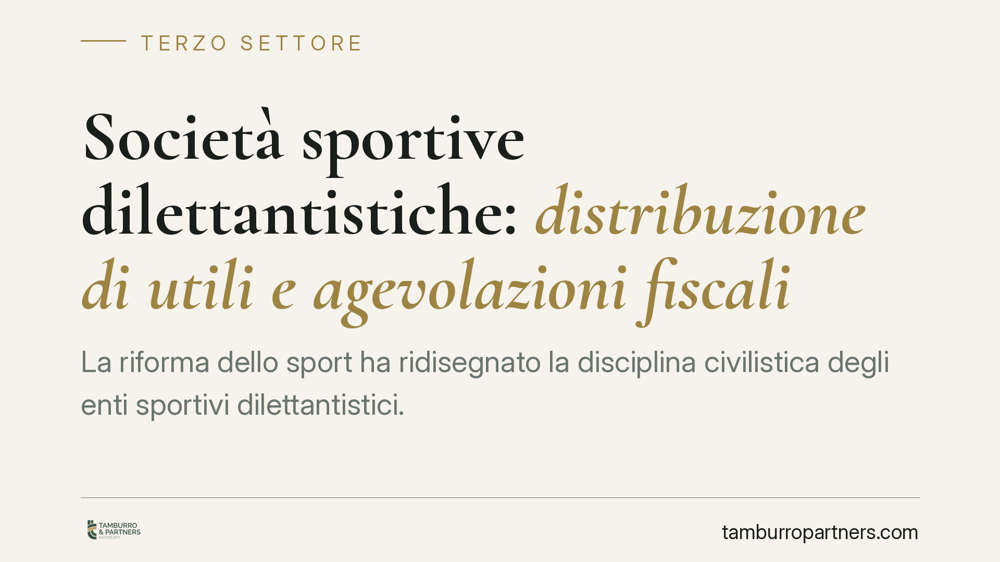

Società sportive dilettantistiche: distribuzione di utili e agevolazioni fiscali
La riforma dello sport ha ridisegnato la disciplina civilistica degli enti sportivi dilettantistici. Resta però un nodo che riguarda migliaia di sodalizi: distribuire utili, anche nei limiti ammessi, mette a rischio le agevolazioni fiscali. Il punto è la divaricazione tra ciò che il diritto societario consente e ciò che il diritto tributario pretende per concedere i benefici. Un disallineamento che va governato con attenzione.

Il contesto
Il decreto di riordino dell'ordinamento sportivo (D.lgs. 36/2021) ha riorganizzato la disciplina degli enti sportivi dilettantistici e del lavoro sportivo. Attenzione a non confonderlo con il Codice del Terzo settore (D.lgs. 117/2017): sono due corpi normativi distinti, che intercettano soggetti e regimi differenti.
La riforma dello sport ha introdotto, sul piano civilistico, margini di maggiore flessibilità per le società sportive dilettantistiche (SSD) costituite in forma commerciale. Ciò ha alimentato un dubbio ricorrente: se la normativa consente, entro certi limiti, di distribuire utili, questa facoltà convive con le agevolazioni fiscali di settore?
La risposta richiede di tenere separati due piani che spesso vengono sovrapposti.
Piano civilistico e piano tributario: due logiche diverse
Sul piano civilistico, la riforma ha ammesso che una SSD possa, in presenza di determinate condizioni statutarie e operative, destinare quote limitate di utili. È una scelta di politica legislativa che riguarda la vita interna dell'ente.
Sul piano tributario, invece, la logica è opposta. Le agevolazioni fiscali per lo sport dilettantistico sono storicamente subordinate al divieto di distribuzione degli utili. In termini più tecnici si parla di assenza di *lucro soggettivo*: l'ente può anche produrre avanzi (il cosiddetto *lucro oggettivo*, cioè ricavi superiori ai costi), ma non può ripartirli tra i soci. È questa rinuncia alla distribuzione che giustifica il trattamento di favore.
La conseguenza è netta: ciò che il diritto societario rende possibile non è automaticamente neutro sul versante fiscale. Una SSD può essere legittimata a distribuire utili e, proprio per questo, perdere l'accesso ai regimi agevolati.
Le tre agevolazioni da presidiare
I benefici fiscali del settore poggiano su tre pilastri, ciascuno con presupposti propri.
Art. 148 TUIR – Decommercializza i corrispettivi specifici versati dagli associati per le attività istituzionali. Condizione tipica: clausole statutarie che includano il divieto di distribuzione di utili e avanzi di gestione, oltre a vincoli su democraticità e devoluzione del patrimonio in caso di scioglimento.
Art. 4 DPR 633/1972 – Esclude da IVA le medesime prestazioni rese agli associati verso corrispettivi specifici, a fronte di requisiti statutari sostanzialmente allineati a quelli dell'art. 148 TUIR.
L. 398/1991 – Introduce un regime forfettario opzionale (determinazione agevolata di IVA e redditi) per gli enti sportivi dilettantistici entro la soglia di ricavi prevista. Anche qui l'accesso presuppone la natura non lucrativa dell'ente sul piano soggettivo.
Il filo comune è evidente: tutte e tre richiedono, in forma diretta o indiretta, che non vi sia distribuzione di utili ai soci.
Un orientamento interpretativo atteso
Sul punto è atteso un chiarimento di prassi da parte dell'Agenzia delle Entrate, nella direzione già desumibile dal sistema: la distribuzione di utili, pur consentita in sede civilistica, è incompatibile con il mantenimento delle agevolazioni fiscali.
Precisiamo che, al momento della redazione, non è stato possibile verificare in banca dati ufficiale gli estremi definitivi del documento di prassi. Consigliamo quindi di confermare contenuto e riferimenti presso le fonti istituzionali prima di assumere decisioni gestionali.
Implicazioni pratiche
Per una SSD la scelta non è neutra. Introdurre nello statuto la facoltà di distribuire utili, o esercitarla in concreto, può comportare la fuoriuscita dai regimi di favore, con un aggravio fiscale potenzialmente rilevante e con effetti anche sugli esercizi pregressi in caso di controllo.
Il bivio è strutturale: privilegiare la flessibilità distributiva consentita dalla riforma oppure conservare le agevolazioni. Le due opzioni, allo stato, non appaiono cumulabili.
Cosa fare in concreto
- Verificate lo statuto: controllate che permanga la clausola di divieto di distribuzione di utili e avanzi, requisito trasversale alle tre agevolazioni.
- Qualificate l'obiettivo dell'ente: se intendete distribuire utili, mappate preventivamente i benefici fiscali che andreste a perdere e quantificatene l'impatto.
- Non introducete clausole distributive senza un'analisi fiscale: una modifica statutaria apparentemente neutra può pregiudicare i regimi applicati.
- Monitorate la prassi dell'Agenzia: verificate gli estremi ufficiali dell'orientamento atteso prima di deliberare.
- Documentate le scelte: tracciate in verbali e delibere la coerenza tra assetto statutario e regime fiscale adottato.
La valutazione va condotta caso per caso, in relazione alla forma giuridica, al volume di ricavi e all'attività effettivamente svolta.
Ogni ente del terzo settore ha la sua storia.
Se rappresenti un ETS e vuoi un confronto su governance, RUNTS o fiscalità, scrivi allo studio. Ti rispondiamo entro un giorno lavorativo.